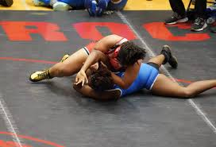

Women's wrestling is a competitive sport that involves physical strength, technique, and strategy. Wrestlers compete in various weight classes and age groups. It is currently one of the fastest growing sports in the world. There are also different styles of wrestling, such as freestyle, folkstyle and Greco-Roman. Up until college most girls participate in folkstyle but once they get to higher levels everything changes to freestyle.
How Matches Work
Depending on the style of wrestling, matches are structured differently and have different rules.
Folkstyle Match Structure
- 3 2-minute periods
- No locking hands on bottom
- Top, bottom, and neutral positions
- Points are scored for takedowns, escapes, reversals, and near falls
- Ways to win: pin, technical fall, or decision
- More rules and certain moves are illegal
Freestyle Match Structure
- 2 3-minute periods
- Locking hands on bottom is allowed
- Neutral, top, and par terre
- Points are scored for takedowns, exposures, and throws
- Ways to win: pin, technical fall, or decision
- Fewer rules and more moves are legal
Equipment and Safety
There isn't a lot of equipment needed. The equipment also depends on what division you are in. For instance the NCAA requires a wrestling singlet, headgear, and appropriate footwear while NAIA doesn't require headgear. Also some people wear additional protective gear like knee pads or elbow pads for extra safety. Mouth guards are also worn sometimes but are not required unless you have braces.
